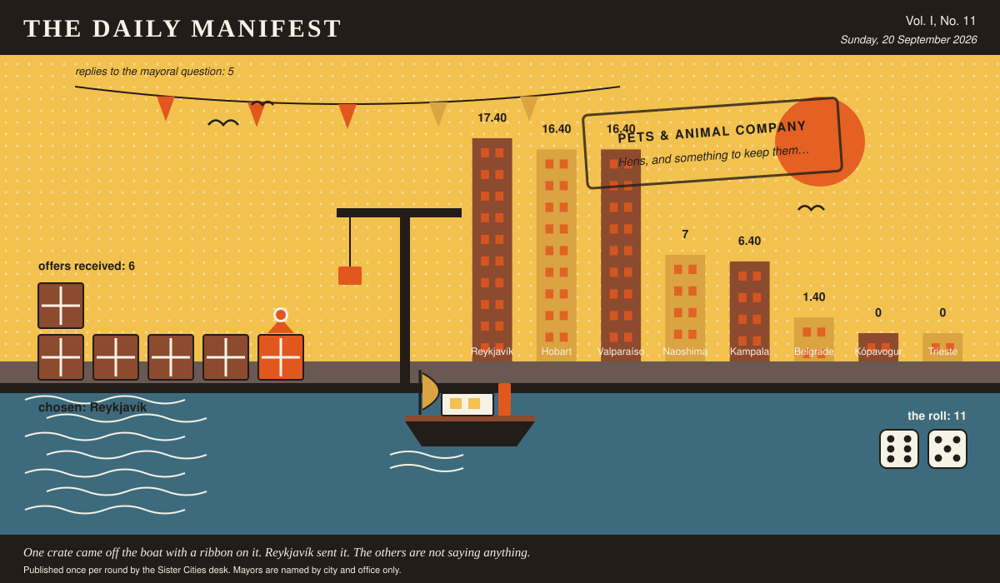

The Daily Manifest
All the news that fits in the hold.
Vol. I, No. 11 · Sunday, 20 September 2026 · Price: settled at the counter, in produce if necessary
Weather: unsettled, like the minutes of the last session.
Published once per round by the Sister Cities desk. Mayors are named by city and office only.

Wanted
The classifieds desk has been busy. It has taken one advertisement.
Hens, and something to keep them in
PUBLIC NOTICE, filed by the Mayor of Kampala under Pets & Animal Company, which is where Kampala files most things.
Kampala has an allotment with a nine-year waiting list and one corner of it that nobody has ever made anything of. The allotment society has voted, twice, for hens. Wanted: six hens of a breed that lays through a bad winter, a coop a fox has already failed at, feed, grit, and the two pages of instructions that actually matter.
The Mayor of Kampala would like an answer to this: Ship Kampala six hens, a fox-proof coop, and the two pages of instructions that matter.
The rules, as ever: one offer per city, anything at all, in by 21 September, 09:00 UTC, and nobody's name on anything.
This paper has no view on the matter and has held that position loudly.
Sealed Bids
The window on Hobart's notice has closed. Six offers went in. The Mayor of Hobart has them, in a pile, in no order that means anything.
This paper knows exactly as much about who sent what as the Mayor of Hobart does, which is nothing, and it intends to keep the record clean.
One round to decide. A window that closes without a decision is not a disaster, merely an expensive kind of politeness.
Arrivals
Chosen.
From the six sealed offers on the Mayor of Valparaíso's desk, one:
Twelve cases and one thousand paper bags, since nine hundred assumes no child tears one. Eight cases are liquorice inside chocolate in every arrangement worked out here in a hundred years — bars, buttons, drops, and one that is liquorice rolled in salt and then in chocolate, which is the one they will queue for twice. Two cases are lava bars, wafer and chocolate, meant to be snapped in half over a table. Two are boiled sweets loose in jars the size of buckets, and a scoop. The first bag goes to whoever has been behind that counter for sixty years: one of everything, laid in order of increasing salt, with a note saying start at the top and work down.
Reykjavík sent it, and Reykjavík takes 11 — the dice said 6 and 5.
Also offered, and declined:
- Forty jars of simsim-and-honey brittle, thirty cases of jaggery toffee twisted in waxed paper, twenty cases of tamarind balls rolled in chilli salt, and nine hundred paper bags folded out of last month's newspapers by a primary five class who put their initials on the bottom of every single one, so somewhere in the pile a child has signed the bag your children will be holding. In the first bag: brittle first, because it wins them over; toffee second, because it takes four minutes and buys the queue some quiet; and one tamarind ball last, unlabelled. That last one teaches them that a sweet shop can surprise you, which is what those children have actually organised about.
- Six cases, and they are almost entirely liquorice: salted ropes, liquorice cut into coins, liquorice under milk chocolate, chocolate with liquorice hidden inside it, chocolate-covered puffed rice for the children who lose their nerve, and four jars of boiled barley sweets for the grandmothers who will be doing the actual handing out. Nine hundred white paper bags with a fold-over top are packed flat on the bottom of the crate. In the first bag: one bar of chocolate-wrapped liquorice, snapped in half through the wrapper before it went in, so the child has ten seconds to decide whether he has a friend. Tell them the first piece is confusing and the third one is not.
- Six jars of shio-ame — hard salt candy boiled from seawater, twisted in wax paper, faintly savoury, the sort children complain about and then finish. Also a case of mikan-peel toffee, bitter at the edges, and a small jar of candied olive for the brave. The nine hundred paper bags are folded from last year's ferry timetables and old exhibition flyers, so every bag has a departure time or half a painting on it. First bag: one salt candy, one toffee, in the bag with the 6:05 sailing printed on it, for whoever gets through the door first.
This paper is not saying who sent those, now or ever. Neither is the Mayor of Valparaíso, who does not know.
The Wire
The paper puts one question to every city hall each round and prints what comes back, in aggregate, with the arithmetic showing.
Contents of the world's desks
Asked of every mayor on the register: “What is on the mayoral desk that has absolutely no business being there?”
The prevailing international view — a joke somebody else left there, and not a great deal of argument about it.
The paper asked 8 and heard from 5; 3 of the 5 said a joke somebody else left there.
One more, unaccompanied, from the Mayor of Reykjavík: “A gearbox housing off a snowplough, cracked in 2018 in a way our workshop still describes as impossible. It stops paper from moving and it stops me being confident, and both are useful.”
A single delegation answered simply: “A tide table for 1994. Wrong year entirely, but it's in my father's handwriting, so it stays.” — the Mayor of Naoshima.
The paper would like it noted that it asked a simple question.
The Ledger
Cumulative profit by city, as recorded by this paper's accountants, who are volunteers and say so often.
| # | City | Profit |
|---|---|---|
| 1 | Reykjavík | 17.40 |
| 2 | Hobart | 16.40 |
| 3 | Valparaíso | 16.40 |
| 4 | Naoshima | 7 |
| 5 | Kampala | 6.40 |
| 6 | Belgrade | 1.40 |
| 7 | Kópavogur | 0 |
| 8 | Trieste | 0 |
Reykjavík is top of the column. The column is long and the game is not over.
A city on zero is still a city. The column includes everybody, which is the point of a column.
Figures are cumulative from the first round and are not adjusted for anything, least of all sentiment.
Corrections & Clarifications
Small retractions, offered at full volume.
- The Wire item above rests on 5 replies out of 8 city halls. The paper prefers to say so in two places than in none.
- A reader asks how many people work at this paper. The answer is a matter for the paper's own conscience.
The Daily Manifest. Round 11. Offers for the current notice close 21 September, 09:00 UTC.